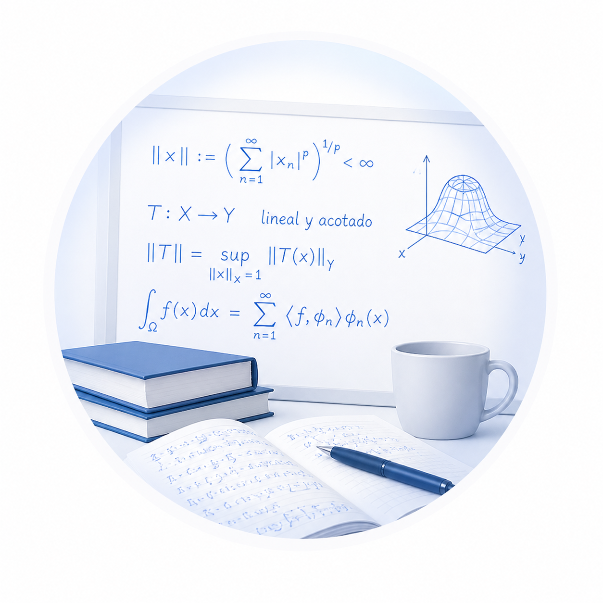

No todas las asesorías en matemáticas son iguales. Hoy en día puedes encontrar opciones muy distintas: escuelas con cursos estandarizados, ingenieros que enseñan desde la práctica, o estudiantes que apoyan de forma puntual. Pero si lo que buscas es comprender verdaderamente las matemáticas la diferencia es significativa.
Yo trabajo desde otro enfoque. Cuento con formación de posgrado en ciencias matemáticas y experiencia tanto académica como aplicada, lo que significa que no solo conozco los procedimientos, sino también la estructura, el porqué y la lógica detrás de cada concepto. Mi objetivo no es que memorices, sino que desarrolles criterio matemático.
He participado en el desarrollo de cursos universitarios, lo que me permite explicar con claridad y con una secuencia didáctica real; trabajo creando contenido educativo profesional, por lo que sé cómo transformar ideas complejas en aprendizaje accesible; y también tengo experiencia en aplicaciones reales en finanzas y modelación, aportando una visión clara de para qué sirven realmente las matemáticas fuera del aula.
Esto se traduce en acompañamiento personalizado, comprensión profunda, desarrollo de intuición matemática y un camino estructurado para avanzar con seguridad. Si quieres entender, avanzar con claridad y realmente dominar las matemáticas, entonces estás en el lugar correcto.